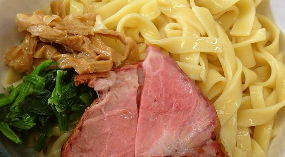
一枚の麺帯を、包丁で切り分けております
豚骨と鶏がらに、昆布と干し椎茸を重ねたスープ。
麺は北海道産の小麦を三種、配合して打っております。
包丁で切り分ける平打ちの手切り麺は、一日十食かぎりでご用意しております。
茨城県古河市・国道125号沿い（ジョイフル本田 古河店から西へ六百メートルほど）／駐車場がございます
お支払いは現金のみ・ご予約は承っておりません／材料がなくなり次第、閉めさせていただきます
平打ちの麺は、のした麺帯を包丁で切り分けてお作りしております。手で切りますので、幅は一本ずつ違います。太い一本は歯にこたえ、細い一本はつけ汁をよく持ち上げます。一杯のなかで食感が変わるのを楽しんでいただければ幸いです。
切り出せる量にかぎりがございますので、この平打ちは一日十食までのご用意です。売り切れの節はご容赦くださいませ。
本日のぶんが残っているかは、0280-31-6670 にてお答えいたします。
手切りつけめん 一日十食かぎり
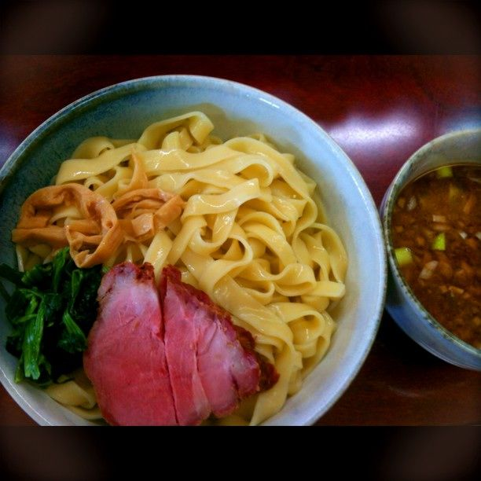
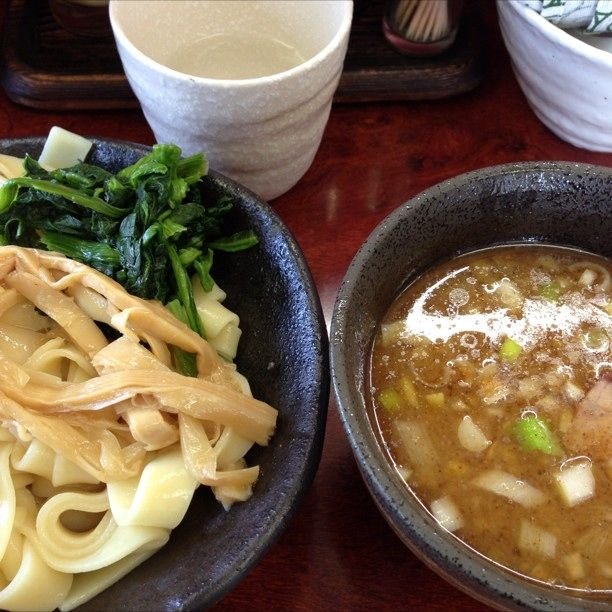
豚骨と鶏がらを炊いたところへ、昆布と干し椎茸を重ねております。最後の一口まで飲んでいただけるよう、甘みのある仕立てにいたしました。麺は北海道産の小麦を三種、配合して打っております。
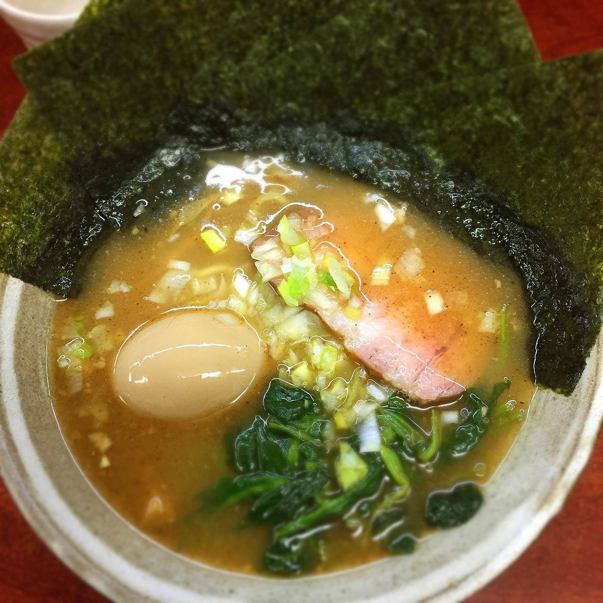
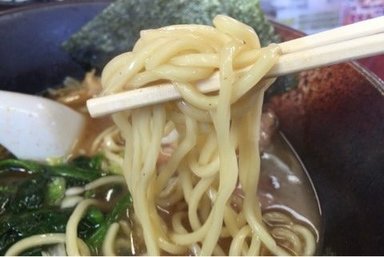
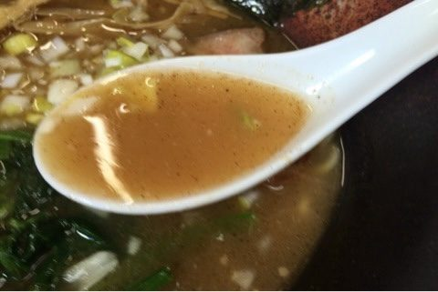
「スープには甘みがあり、比較的あっさりしていて、かなり美味しいです。また叉焼もレア感があってとても美味しい。」
お客様の声より
「しっかりと旨味のある魚介系のスープで、炙りチャーシューの効力でしょうか香ばしさを感じます。ほんのりと甘味のあるスープでレンゲが止まりません。」
お客様の声より
白髪ねぎを山にした一杯、太めの麺を冷やして汁につけていただく一杯、汁を持たずに和えてお出しする一杯。お好みでお選びくださいませ。
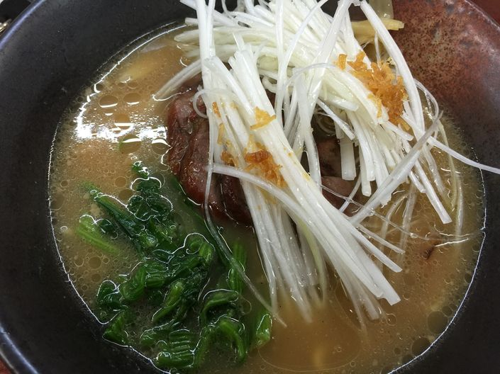
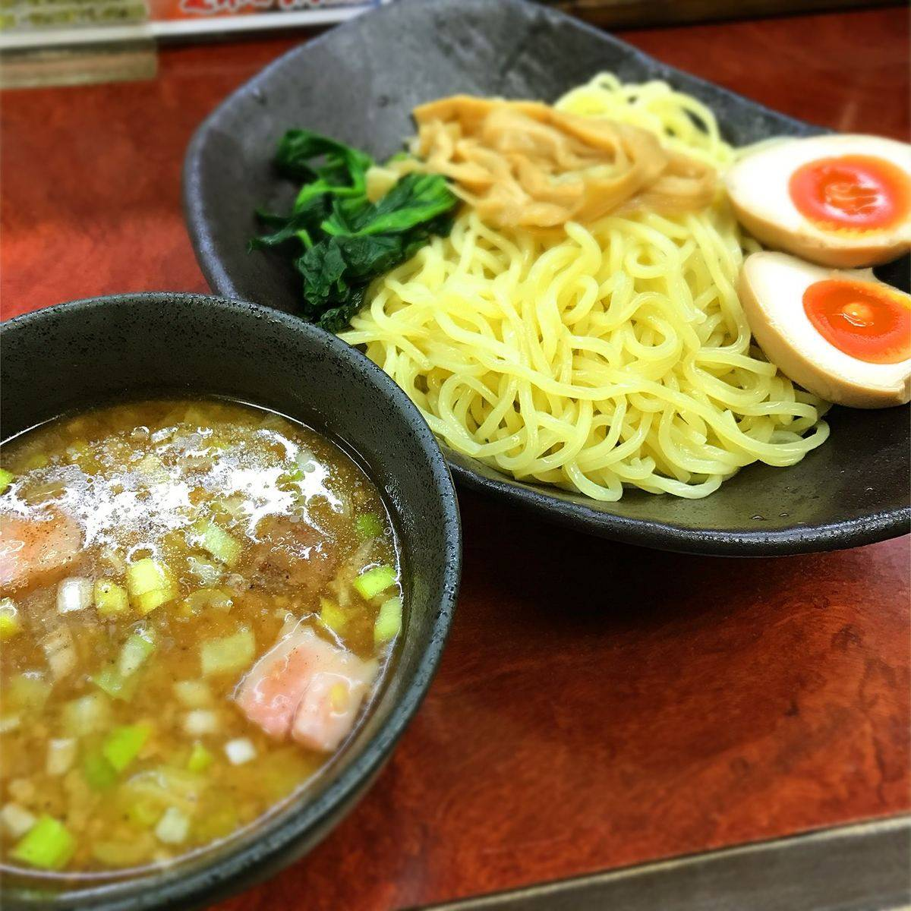
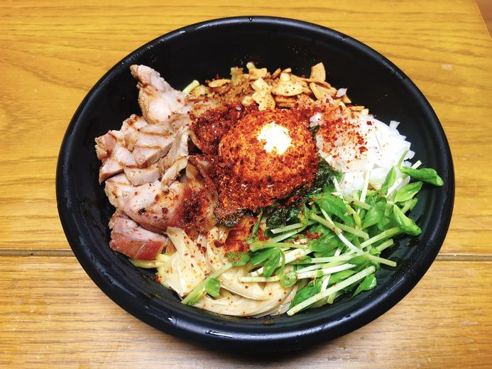
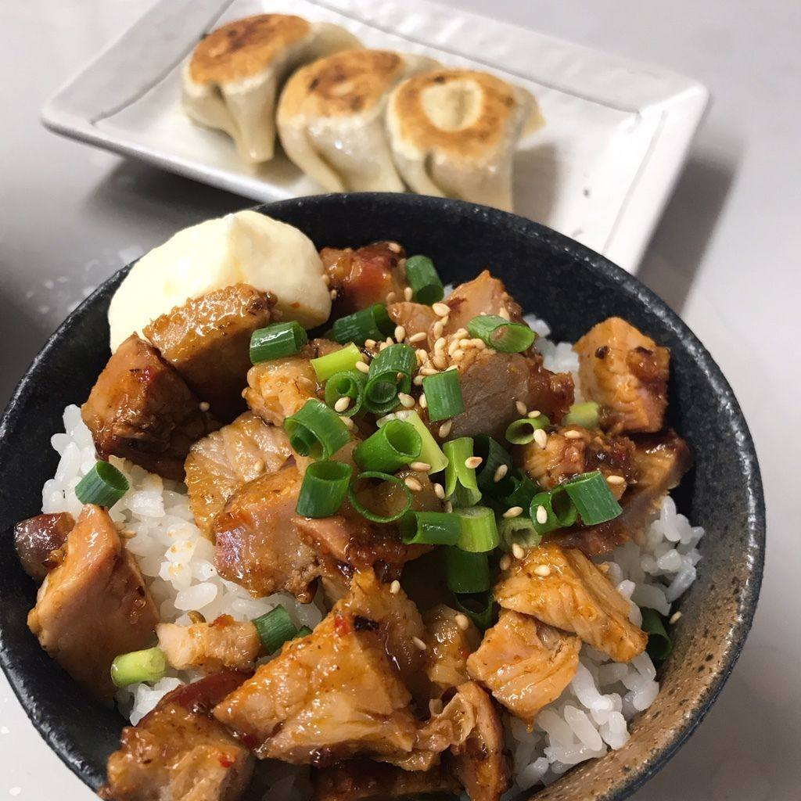
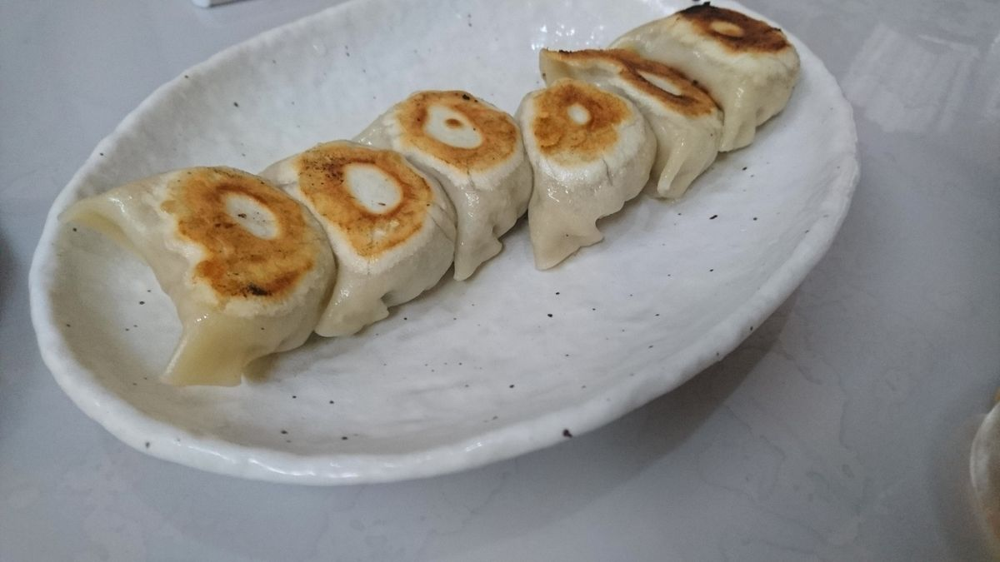
暑い時季は、かき氷もお出ししております。夏の冷やしらーめんとあわせて、店内のお品書きでご案内いたします。
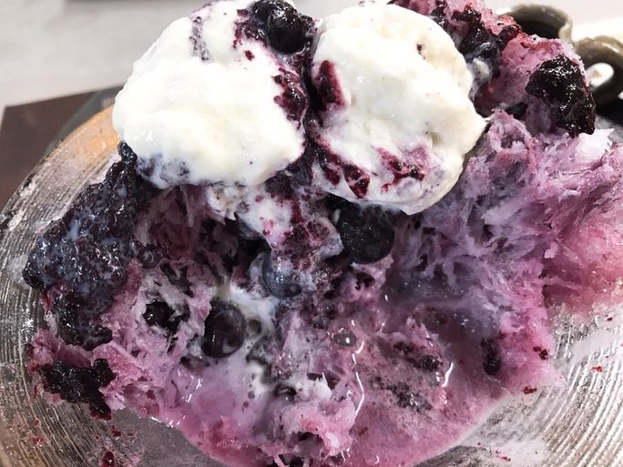
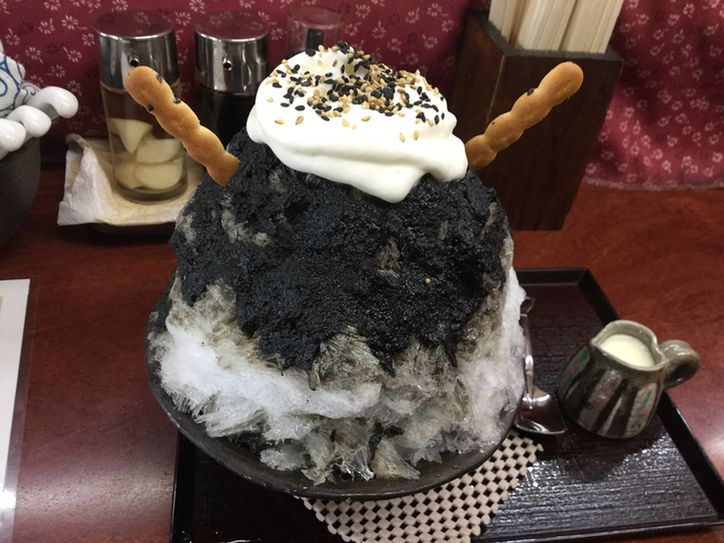
小さな店でございます。お一人でも、ご家族連れでも、どうぞお気軽にお立ち寄りくださいませ。
月曜日と、第一・第三火曜日はお休みをいただいております。月に二度の連休の日取りは、店のXでお知らせしております。
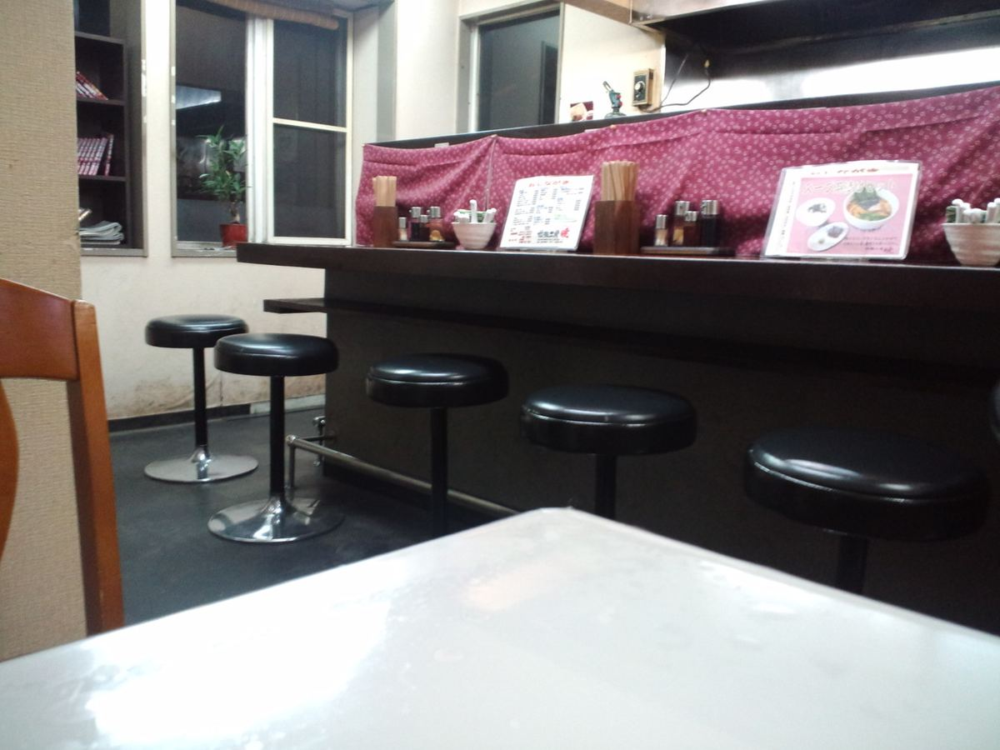
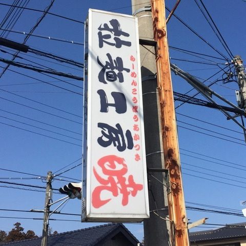
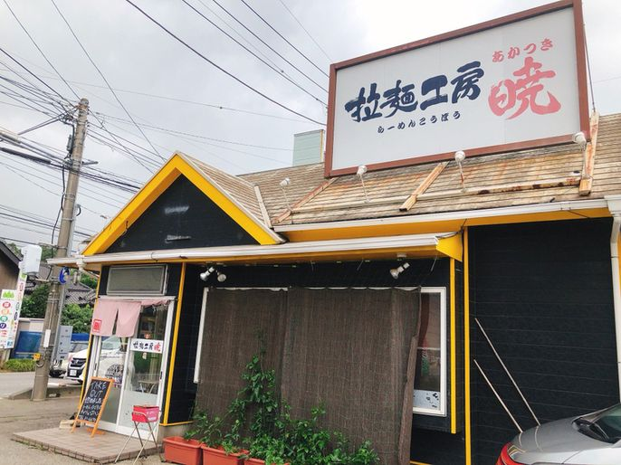
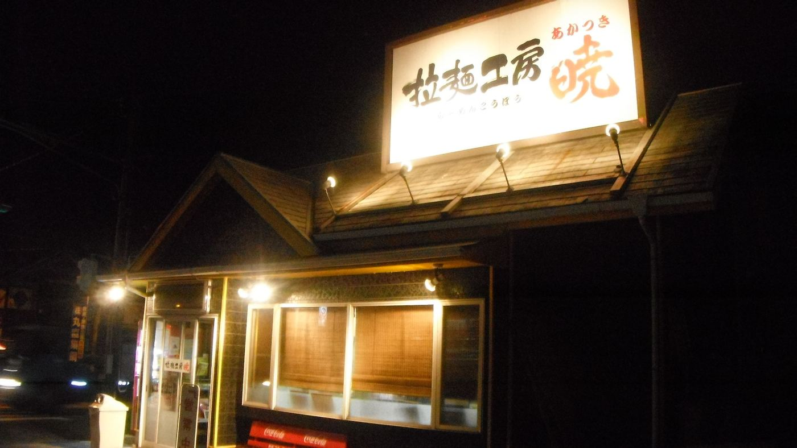
| 住所 | 〒306-0233 茨城県古河市西牛谷1204-1 |
|---|---|
| 電話 | 0280-31-6670 |
| 営業時間 | 昼 11:30〜14:00 夜 18:00〜22:00（お料理のご注文は21:30まで） 材料がなくなり次第、閉めさせていただきます。日曜の夜は早めに閉めることがございます。 |
| 定休日 | 月曜日／第一・第三火曜日 月に二度の連休をいただいております。日取りは店のXでお知らせしております。 |
| お席 | カウンター七席・四人掛けテーブル二卓 |
| 駐車場 | ございます（店の前と、通りを挟んだ向かい） |
| お支払い | 現金のみ |
| ご予約 | 承っておりません |
| アクセス | 国道125号沿い。ジョイフル本田 古河店から西へ六百メートルほどでございます。 |